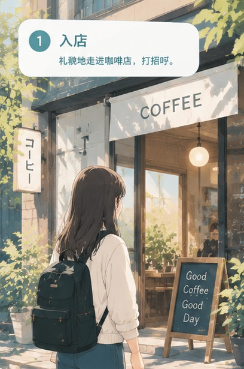

中国→日本
去日本，
不怕开口。
提前练会你在日本真正会用到的话。
🔥 今日推荐

咖啡店点单 かふぇで ちゅうもん
不是背课文：你走进日本咖啡店，听懂店员、开口回应，一步步把单点完。
🚩 旅行篇 · 推荐路线
正文用纯平假名，专为刚入门、想开口的你设计。25 关由易到难，一关一关往上走。
闯关进度 · 从易到难
- 🗺️闯关解锁：通过上一关，才能进入下一关（设置里可一键全开）
- 🖍️重点名词带色标注，点它弹出中文词卡并朗读
- 🎧跟读对比：先听示范，再录音回放，和原音比一比
难度筛选：
热门场景
⭐ 我的生词本
你在学习中收藏的句子都在这里，可朗读或取消收藏。
🗾 场景地图
按真实生活的顺序排好的场景，一处一处走完。
🆘 语言急救包
开不了口的时候，把屏幕递过去也行。
📖 必要单词
按场景挑词：每个场景真正用得上的那 3~4 个，先记这些就够开口。
⭐ 我的备忘录
你在语言急救包里 ⭐ 过的整句都在这儿，连读法一起。要记单个的词，去「必要单词」。
👤 我的
🔓 解锁全部场景
一次买断，离线可用，不订阅、不自动续费。